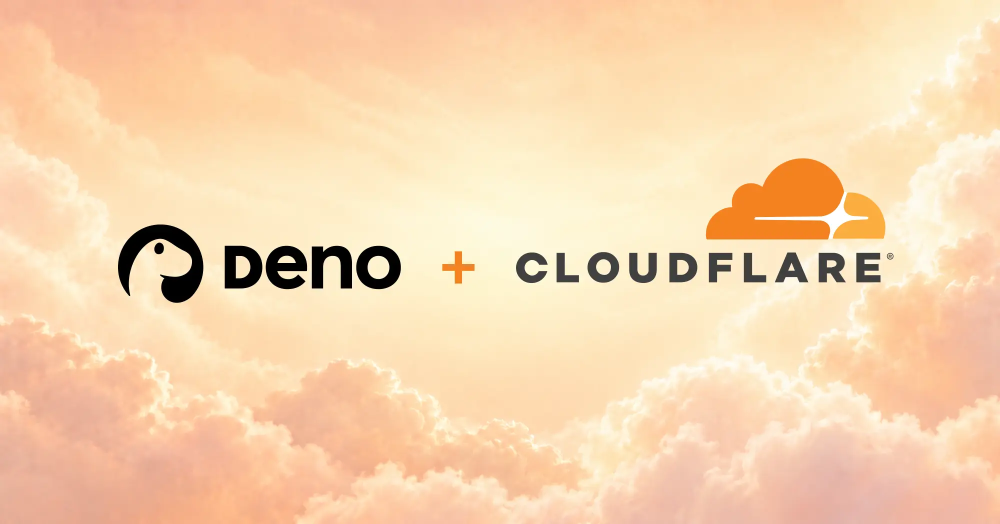

9 октября 2026 года Райан Далл — создатель Node.js, а затем его главного оппонента Deno — объявил: вся команда Deno присоединяется к Cloudflare. Формулировка показательная: не «наш рантайм покупают», а «мы уходим делать другую платформу». Вместе с Даллом переезжает вся команда, включая сооснователя Берта Белдера.
Конкретика из официального анонса: рантайм Deno будут поддерживать ещё год — ежемесячные релизы с исправлениями багов и уязвимостей, после чего разработка прекратится. Код останется открытым, «мы приветствуем тех, кто захочет продолжить», — но фактически это замороженный проект. Хостинг Deno Deploy закроют через шесть месяцев, платящим клиентам обещают помощь в переезде на Cloudflare Workers. Регистр модулей JSR продолжит жить, но его инфраструктуру перевезут под крыло Cloudflare. Мост rusty_v8 команда обещает поддерживать и встроить в workerd — рантайм-движок Workers.
Смысл сделки — проект celld: открытый демон, который команда Deno выпустила летом и который позволяет запускать распределённые Workers и Durable Objects на собственном железе (обозреватели называли цифру экономии против управляемого облака до 88%). У самой Cloudflare есть workerd, но его Durable Objects работают только в один экземпляр; celld добавляет именно распределённость. План — слить celld и workerd в один продукт и сделать «модель программирования Workers» дефолтным способом строить серверы: и в облаке Cloudflare, и в своём дата-центре.
Далл прямо пишет, что потребность в таких абстракциях острее всего именно с ИИ: Durable Objects — это дешёвый бессерверный контейнер с постоянным состоянием, WebSocket и своей SQLite-базой, то есть готовый каркас (harness) для агентов, которым нужно переживать перезапуски и помнить контекст. Кентон Варда, Distinguished Engineer Cloudflare, подкрепляет: цель — радикально упростить самостоятельный хостинг той же модели, на которой у Cloudflare уже крутятся агентные нагрузки.
На Hacker News новость уже окрестили ироничным «404 Deno CEO not found»: больше пятнадцати лет Далл строил альтернативу Node.js, обличал его архитектурные грехи, а в итоге его рантайм ждёт судьба многих «убийц Node» — статус открытого проекта с корпоративным опекуном у конкурента. Для тех, кто построил бизнес на Deno Deploy, шесть месяцев — срок жёсткий: миграция на Workers означает переписывание под чужую модель. Для экосистемы JavaScript это конец целой эпохи «рантайм-войн»: в гонке остаются Node, Bun и облачная ветка workerd.